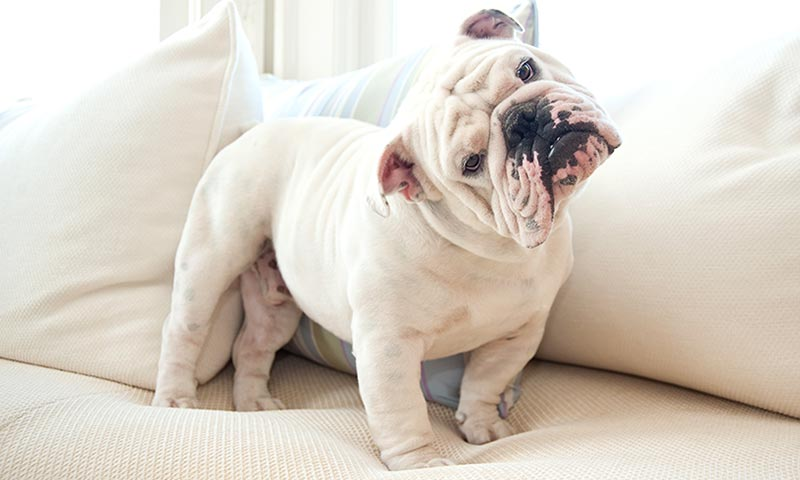
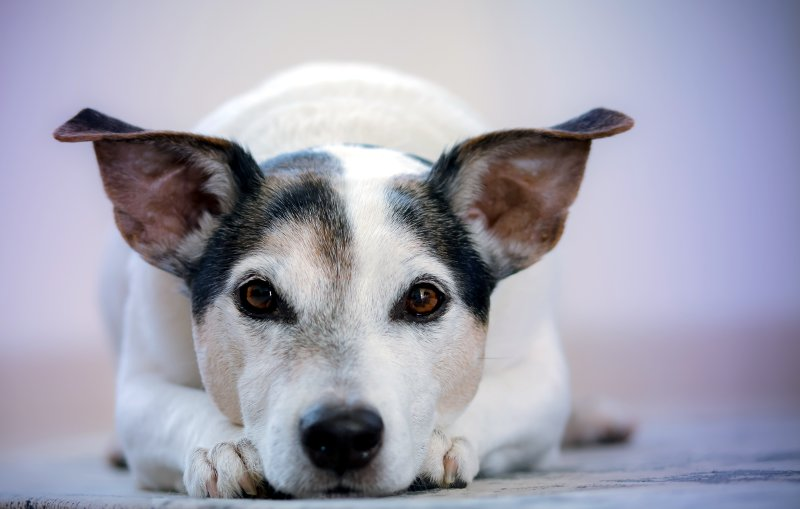
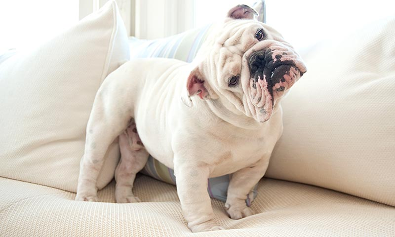
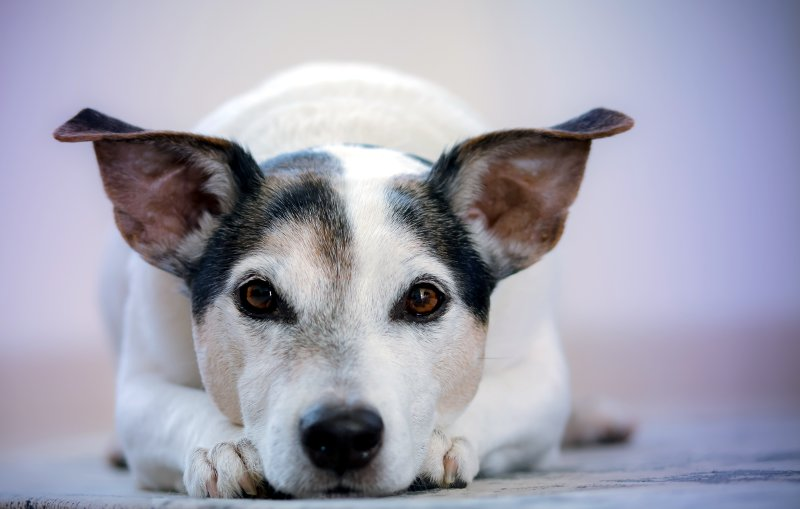

Un poco sobre nosotrosDesde hace más de 24 años, particulares, profesionales y amateurs han encontrado en nuestro Centro Canino el lugar donde poder confiar el cuidado de sus animales. Durante todo este tiempo nuestra vocación ha estado del lado del servicio y asesoramiento de cuanto rodea al mundo canino y felino. Confía en zoerum. Encontrarás a tu disposición un elenco de expertos capacitados para brindarte formación y asesoramiento para resolver todas tus inquietudes, personales o profesionales, en tu relación con los animales. |